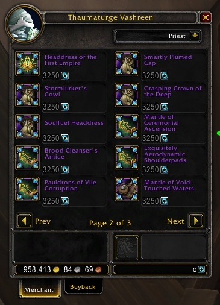
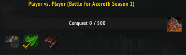
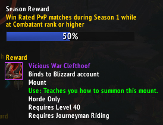
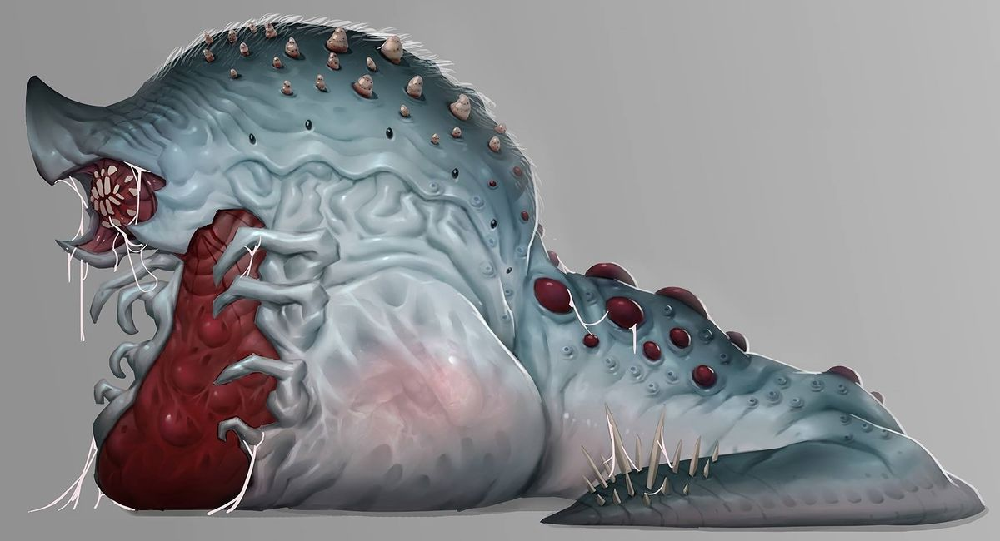
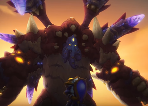
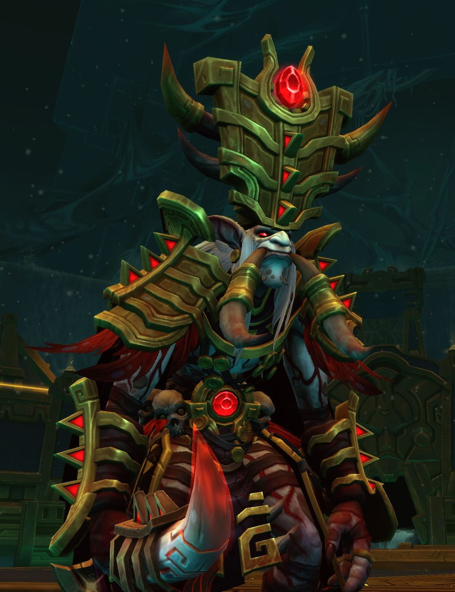

Depuis l'ouverture du serveur de test le 17 septembre, des tas de nouveaux changements ont été annoncé par Blizzard, voici une partie d'entre eux !
Malgré que l'extension Battle for Azeroth vienne d'être lancé, les développeurs nous parle déjà du patch 8.1 et du lot de contenu que celui-ci apportera ! Parmi eux, des ré-équilibrage, des changements de mécaniques, des suites de quêtes et bien plus encore !
Ce dernier point est d'ailleurs le plus important du patch. En effet à la fin de quêtes standards de l'extension, les 2 factions sont en pleine guerre totale et la situation ne peut plus durer : l'Alliance est à bout de souffle à force de combattre Sylvanas, chef de guerre de la Horde qui n'hésite pas à se servir de ses troupes comme de la chair à canon.
Résultat ? La suite de la campagne de guerre de la Horde risque d'être agitée puisque les joueurs auront apparemment le choix de trahir ou non Sylvanas au profit de Saurcroc, un orc ayant toujours été fidèle à la Horde.
Plutôt Saurcroc ou Sylvanas ?
Côté mécanique de jeu, le plus gros thème reste les armures azéritiques ! Ces armures, implanté pour cette extension, était censé aider les joueurs dans leur quête en leur proposant des améliorations de sort. Le problème ? Obtenir ces améliorations (et les armures en elles-mêmes) est une tâche qui relève entièrement du hasard !
Pour remédier à cela, Blizzard a augmenté le nombre d'améliorations disponibles et créer un vendeur d'armures azéritiques ! De cette manière les joueurs pourront réellement sélectionner les pièces azéritiques qui les intéressent.

Il sera possible d'acheter différent niveau d'armures, y compris des pièces d'armures normalement très rare (celles trouvées dans les raids par exemple). La monnaie utilisée pour acheter ces objets pourra être gagner par le joueur lorsque celui-ci désenchantera des armures azéritiques qui lui sont inutiles !
Désormais, les armures azéritiques du plus haut niveau seront composé d'un cercle en plus ! Sur l'image, il s'agit de celui qui est le plus vers l'extérieur.
De ce fait, c'est lui qui possède le plus d'améliorations possible, ce qui nous laisse croire que les développeurs veulent vraiment nous donner plus de choix.
Enfin, la dernière information majeure de cette mise à jour concerne un tout nouveau raid ! En effet , "Le siège de Dazar'alor" serait le nom de la nouvelle instance. Nous ne savons pas encore grand chose à propos de ce raid, si ce n'est qu'il prend place dans la capital des Trolls de Zandalari (alliés de la Horde) et que pour la toute première fois dans l'histoire du jeu : le début du raid sera différent selon la faction de votre personnage !
Nous n'avons encore aucune information concernant l'attaque des 2 factions sur Dazar'Alor mais les raisons doivent être assez grave pour que la Horde se retourne contre une ville alliée aussi précieuse.
La nouvelle saison JcJ est de retour !
A l'occasion de la sortie du nouveau raid d'Uldir, une toute nouvelle saison Joueur contre Joueur a été lancé !
Là voilà enfin ! Les accros des modes Joueur contre Joueur l'attendait avec impatience et elle est de retour : La 26ème saison JcJ vient d'arriver en jeu ! Et elle apporte avec elle un grand nombre de changement aux systèmes d'arènes et de champs de bataille. Cette fois-ci nous avons le droit à :
Un tout nouveau système de progression afin d'obtenir de l'équipement JcJ

Cette barre est un concept nouveau dans WoW, à chaque palier, le joueur obtient une nouvelle pièce d'armure afin de l'aider dans ses matchs JcJ.
Avant l'implantation de cette barre, les joueurs devaient gagner des "points de conquêtes" qu'ils dépensaient à des marchands spécifiques afin d'acheter l'équipement qu'ils désiraient.
Une barre de progression supplémentaire pour l'obtention d'une monture exclusive (tout en gardant un moyen d'obtenir les anciennes montures JcJ)

La monture de cette saison est le "Sabot-fourchu de guerre vicieux". Pour l'obtenir, il suffit de gagner des matchs JcJ classés avec un score de 1400 minimum !
L'ancien système consistait à gagner 100 matchs en tout genre afin d'obtenir une monture au choix, ce système existe toujours, cependant il est maintenant limité aux matchs d'arènes 3vs3
Un nouveau mode de jeu inédit : le front de guerre !
Cette saison, les développeurs ont ajouté un nouveau mode de jeu qui prend place sur les terres d'Arathi, une ancienne zone sur le continent de l'Alliance dont la Horde tente de reprendre le contrôle. Il est composé de 2 phases : une phase d'attaque où une des deux factions se bat pour reprendre le contrôle de la zone, et une phase de contrôle où l'autre faction domine Arathi.
Lors de la phase d'attaque, le but du champ de guerre et de prendre d'assaut la base ennemi, pour se faire, les attaquants doivent collecter des ressources tels que du bois ou du fer afin d'améliorer leur base tout en se défendant contre des vagues d'ennemis. La partie prend fin lorsque les attaquants entre dans la base des défenseurs et tuent leur chef de guerre !
Le contrôle de la scierie et de la mine sont indispensables pour remporter la victoire à Arathi !
Au bout d'une semaine d'attaque, la faction qui défendait Arathi perd la zone au profit des attaquants qui peuvent désormais profiter des monstres rares qui y résident ! Pendant ce temps là, l'équipe qui a perdu doit rassembler des ressources dans sa capitale pour re-planifier une attaque et ainsi relancer un cycle "attaque-défense".
2 nouvelles arènes : chacunes situées dans les capitales des alliés de la Horde et de l'Alliance !
Comme souvent à chaque début d'extension, nous avons le droit à de nouvelles arènes JcJ ! Cette fois-ci, elles sont au nombre de 2 : une pour chaque nouvelle capitale !
L'arène de Dazar'Alor, situé en périphérie de la capital au "Mugambala" est une arène à 2 niveaux avec un pillier central qui rendra fous vos adversaires !
L'arène de Boralus, situé en plein territoire de l'alliance, dispose de multiples obstacles que les joueurs peuvent utiliser à leur avantage !
Ouverture du nouveau raid "Uldir"
Le 4 septembre, les versions normales et héroïques du premier raid de la nouvelle extension Battle for Azeroth ont été rendu disponibles au public !
Cette fois-ci, les champions d'Azeroth devront s'aventurer dans le laboratoire antique d'Uldir construit par les titans il y a des millénaires pour effectuer des tests scientifiques sur les Dieux Très Anciens et leur comportement. Cependant, aux cours de leurs expérience il semblerait qu'une petite erreur se soit produite puisque qu'un Dieu artificiel y a vu le jour. Son nom ? G'huun !

G'huun, malgré son apparence de larve, est extrêmement puissant grâce à ses pouvoirs de "Dieu du sang"
Grâce aux actions des trolls de sang sur l'île de Zandalari, G'huun est désormais libre de sortir de sa prison et ce qu'il planifie pourrait être catastrophique pour Azeroth ! Champions, aux armes !
Ce raid est composé de 8 boss et fait réapparaitre des personnages que les joueurs ont déjà combattu dans les différentes zones de Zandalar tel que Mythrax le Disloqueur ou encore Zul, le traitre du roi !

Mythrax est le dernier boss avant G'huun, un véritable garde du corps de G'huun

Soit disant mort lors du dernier scénario de Zandalar, Zul semble avoir été ressucité par G'huun
Pour vous lancer dans l'aventrue, rendez-vous dans la zone de Nazmir et partait à la recherche d'un groupe ! Attention, il vous sera probablement demander d'être bien équiper et de connaître les attaques principales des boss. Pour cela n'hésitez pas à consulter le guide de l'Aventurier disponible en jeu !
Mise à jour de l'article !
Le 20 septembre, la guilde compétitive "Method" est parvenue à finir entièrement le raid après seulement 9 jour (la version mythique ayant été ouverte le 11 septembre). Bravo à eux !